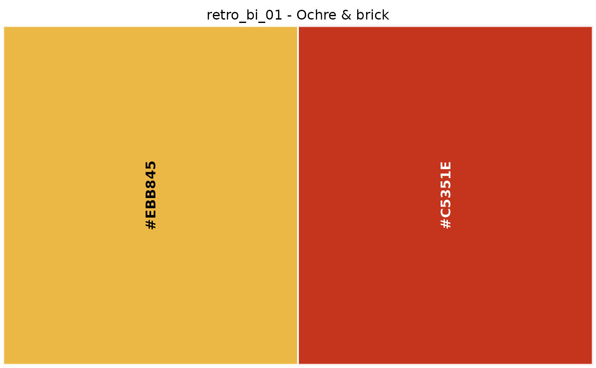

The 55 palettes of the Retro collection, each a character vector of hex colours in printed swatch order.
Usage
retro_bi_01
retro_bi_02
retro_bi_03
retro_bi_04
retro_bi_05
retro_bi_06
retro_bi_07
retro_bi_08
retro_bi_09
retro_bi_10
retro_bi_11
retro_bi_12
retro_bi_13
retro_bi_14
retro_tri_01
retro_tri_02
retro_tri_03
retro_tri_04
retro_tri_05
retro_tri_06
retro_tri_07
retro_tri_08
retro_tri_09
retro_tri_10
retro_tri_11
retro_tri_12
retro_tri_13
retro_tri_14
retro_tri_15
retro_tri_16
retro_tri_17
retro_tri_18
retro_tri_19
retro_tri_20
retro_tri_21
retro_four_01
retro_four_02
retro_four_03
retro_four_04
retro_four_05
retro_four_06
retro_four_07
retro_four_08
retro_four_09
retro_four_10
retro_four_11
retro_multi_01
retro_multi_02
retro_multi_03
retro_multi_04
retro_multi_05
retro_multi_06
retro_multi_07
retro_multi_08
retro_multi_09Format
A character vector of hex colour strings.
retro_bi_01: “Ochre & brick”, bicolor, 2 colours (#EBB845, #C5351E).
retro_bi_02: “Plum & apricot”, bicolor, 2 colours (#934B85, #E18A31).
retro_bi_03: “Violet & olive”, bicolor, 2 colours (#5A4F7D, #717E42).
retro_bi_04: “Gold & ink”, bicolor, 2 colours (#D9BC77, #000000).
retro_bi_05: “Blue & charcoal”, bicolor, 2 colours (#1B65A1, #535760).
retro_bi_06: “Moss & clay”, bicolor, 2 colours (#5C8934, #98614E).
retro_bi_07: “Brick & citron”, bicolor, 2 colours (#C5351E, #C2C719).
retro_bi_08: “Mint & cream”, bicolor, 2 colours (#B5DED9, #FFFCD1).
retro_bi_09: “Walnut & pine”, bicolor, 2 colours (#886C4B, #133B2E).
retro_bi_10: “Slate & stone”, bicolor, 2 colours (#59606A, #979493).
retro_bi_11: “Plum & citron”, bicolor, 2 colours (#934B85, #C2C719).
retro_bi_12: “Brick & moss”, bicolor, 2 colours (#C5351E, #5C8934).
retro_bi_13: “Saffron & ink”, bicolor, 2 colours (#F4C03A, #000000). Contains a provisional reading; see palettes_needing_review().
retro_bi_14: “Blue & poppy”, bicolor, 2 colours (#3071B9, #E34950). Contains a provisional reading; see palettes_needing_review().
retro_tri_01: “Meadow & sky”, tricolor, 3 colours (#E9D99B, #00AC66, #80CDE7).
retro_tri_02: “Harbor”, tricolor, 3 colours (#57B0BF, #233A6E, #E6BF7D).
retro_tri_03: “Poolside”, tricolor, 3 colours (#FFDF4F, #99D4D7, #F29878).
retro_tri_04: “Orange soda”, tricolor, 3 colours (#EE763B, #00A9C4, #EEC66F). Contains a provisional reading; see palettes_needing_review().
retro_tri_05: “Plum, blue & crimson”, tricolor, 3 colours (#846998, #007FAE, #E50D2B). Contains a provisional reading; see palettes_needing_review().
retro_tri_06: “Peach orchard”, tricolor, 3 colours (#F5AE94, #9E4E52, #659930). Contains a provisional reading; see palettes_needing_review().
retro_tri_07: “Crimson garden”, tricolor, 3 colours (#E72F2B, #363E96, #B6DA91).
retro_tri_08: “Harvest”, tricolor, 3 colours (#AFAE41, #965042, #EDD03F).
retro_tri_09: “Steel & rust”, tricolor, 3 colours (#E6E6E6, #769ABC, #CB4E40).
retro_tri_10: “Evergreen studio”, tricolor, 3 colours (#00534B, #A3A493, #F6CAA5).
retro_tri_11: “Blue, walnut & lime”, tricolor, 3 colours (#0083C2, #87624D, #E3E530).
retro_tri_12: “Garden party”, tricolor, 3 colours (#43A864, #AFCC5F, #EA545C).
retro_tri_13: “Velvet”, tricolor, 3 colours (#AE2039, #026467, #CF85AE).
retro_tri_14: “Coffeehouse”, tricolor, 3 colours (#844F45, #C3B59E, #4C443F).
retro_tri_15: “Sunny field”, tricolor, 3 colours (#FFDF4F, #006FBA, #B6DA91).
retro_tri_16: “Sky, leaf & red”, tricolor, 3 colours (#BCE0E7, #8DC163, #D92817).
retro_tri_17: “Quiet olive”, tricolor, 3 colours (#92975A, #C9CACA, #F4EBE3).
retro_tri_18: “Forest & brass”, tricolor, 3 colours (#005846, #B18626, #BFC0C0).
retro_tri_19: “Primary print”, tricolor, 3 colours (#E61919, #FBC400, #004990).
retro_tri_20: “Blue hour”, tricolor, 3 colours (#30A6DF, #1A51A3, #5F5CA7).
retro_tri_21: “Woodland”, tricolor, 3 colours (#7E8B5D, #00533B, #BEB09A).
retro_four_01: “Rose, paper & gold”, four-color, 4 colours (#E6002A, #F7C3C2, #F1ECDF, #FDCE27).
retro_four_02: “Hot type”, four-color, 4 colours (#E60012, #000000, #F18D02, #FDD100).
retro_four_03: “Classic print”, four-color, 4 colours (#E72922, #1E53A4, #006637, #CAB06B).
retro_four_04: “Petal & leaf”, four-color, 4 colours (#F29E9D, #877E9C, #AFC354, #2A8254).
retro_four_05: “Coastal clay”, four-color, 4 colours (#BBDCCE, #E0A63E, #6DA6B1, #DF752F).
retro_four_06: “Botanical”, four-color, 4 colours (#008CAD, #83AF6E, #005A46, #F0D076).
retro_four_07: “Crimson & sea glass”, four-color, 4 colours (#C92539, #D2AF9D, #98C8CD, #0B867E).
retro_four_08: “Summer postcard”, four-color, 4 colours (#61C3D5, #009E5F, #F7B88E, #F08972).
retro_four_09: “Primary play”, four-color, 4 colours (#006DBB, #E60012, #FFF100, #EB611B).
retro_four_10: “Faded fresco”, four-color, 4 colours (#C8E1C6, #A49DAF, #D09890, #D9C699).
retro_four_11: “Lilac & leather”, four-color, 4 colours (#A686BC, #EADEBD, #8D5C61, #A38C4A).
retro_multi_01: “Rose & marigold”, multicolor, 5 colours (#F8CCD1, #D8B77C, #E60E39, #4CAF77, #EBD56C).
retro_multi_02: “Market day”, multicolor, 5 colours (#DEC67B, #EB612A, #FFE100, #1BB8CE, #4BA935).
retro_multi_03: “Ceramics”, multicolor, 5 colours (#EDC4AC, #D7C65E, #64ABAB, #DF6057, #6C4C3E).
retro_multi_04: “Record shop”, multicolor, 6 colours (#C09F32, #FFF100, #424393, #E8350F, #006C3C, #10318B). Contains a provisional reading; see palettes_needing_review().
retro_multi_05: “Autumn archive”, multicolor, 8 colours (#929E51, #F5AB7C, #D9BC77, #E0B68F, #CBD9DE, #1D50A2, #F2CC16, #C33E47).
retro_multi_06: “Twilight bouquet”, multicolor, 6 colours (#99B6D6, #C0C2E2, #8C8AB2, #E5CF62, #EC859C, #F6C0D3).
retro_multi_07: “Pastel garden”, multicolor, 5 colours (#E9D3DB, #EDE6C7, #9EBBD8, #EFD359, #71A72E). Contains a provisional reading; see palettes_needing_review().
retro_multi_08: “Seaside poster”, multicolor, 6 colours (#0064AB, #69C4D9, #46B074, #E44D35, #F4C92B, #B6DACF).
retro_multi_09: “Dusk to amber”, multicolor, 6 colours (#27348C, #5E4D8D, #AA8CC5, #6DAAC3, #90C59D, #F7B349).
Details
7 of them contain a provisional reading and are marked
"review" in the catalogue; see palettes_needing_review().
Examples
retro_bi_01
#> [1] "#EBB845" "#C5351E"
show_palette(retro_bi_01)
